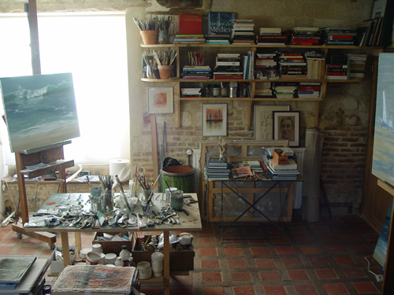

Né à Fieffes-Montrelet — Somme — France
Année préparatoire à l’Ecole des Beaux-Arts d’Amiens.

Expositions actuelles de MARINES :
Galerie l’Ermitage au TOUQUET du 12 avril au 10 juin 2014
Galerie NEEL - 2 Place des Vosges à PARIS
et 3 rue du Commandant Vidal à Cannes
( en permanence )
Galerie Les Artistes et la Mer à SAINT MALO ( Ille et Vilaine )
Les Marissons à AMIENS ( Somme )
Galerie du Château à AURAY ( Morbihan )
Manoir de Sarton ( Pas- de - Calais )
Principales expositions depuis 1980
| En France | A l’étranger |
|
|
Pendant de nombreuses années, j’ai peint des objets que je pouvais toucher, des objets proches de moi, à portée de main, pour en faire des compositions très architecturées. Des natures mortes que j’essayais de faire vivre avec des objets inanimés, objets de tous les jours assemblés entre eux selon leurs affinité et placés immobiles sur un entablement horizontal, statique, intemporel, définitif.
Ensuite, pour sortir de cet univers immuable, j’ai ouvert mes fenêtres. Les merveilles des palais vénitiens m’ont ébloui. Dans mes premières toiles, j’ai copié des façades comme on copie une pomme. Puis, abandonnant la création des architectes vénitiens, j’ai recomposé des façades en me servant d’éléments existants mais assemblés différemment pour faire des palais inconnus.
Depuis 2009, j’ai quitté natures mortes et Venise. J’ai pris le large. Du statique, je partais vers la dynamique. Les verres d’eau de mes natures mortes se sont brisés, l’eau de mes carafes s’est répandue et de mes canaux vénitiens je suis parti vers la mer. Après l’univers confiné de mes natures mortes, j’ai maintenant devant moi l’immensité, la mer.
La mer c’est des vagues, des transparences, de l’air, des écumes, des bateaux. . C’est aussi des plages de sable avec des chars à voile, des cavaliers , des promeneurs, des cabines de bois ou de toile que le vent bouscule…